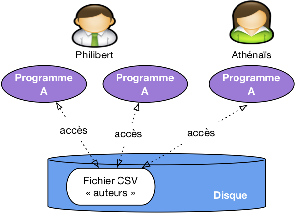
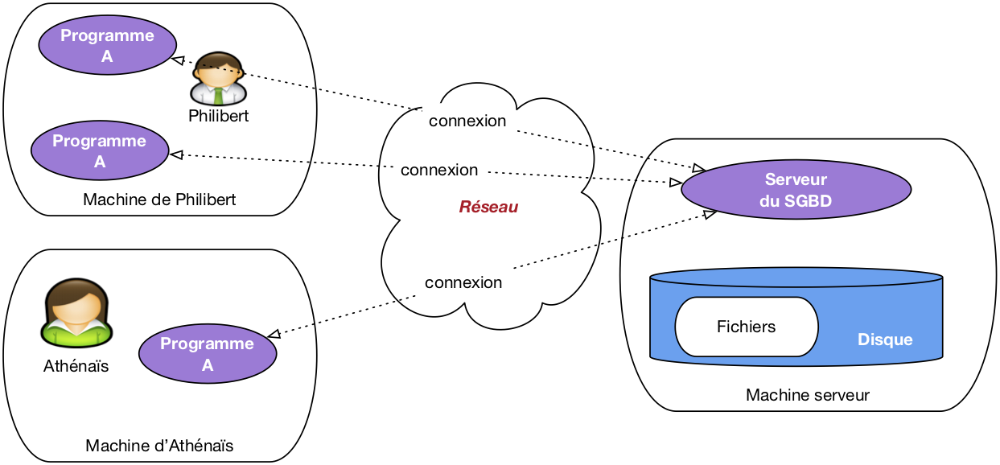
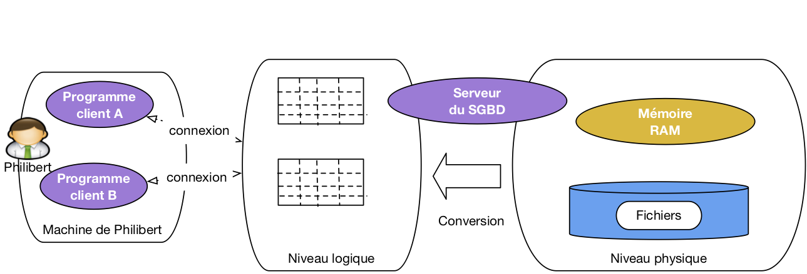
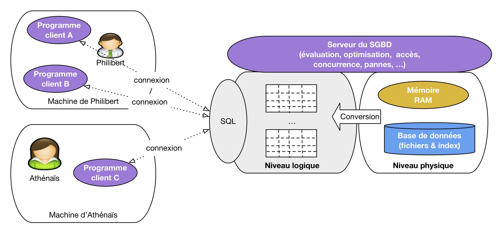

Le document que vous commencez à lire fait partie de l’ensemble des supports d’apprentissage proposés sur le site http://www.bdpedia.fr. Il constitue, sous le titre de « Modèles et langages », la première partie d’un cours complet consacré aux bases de données relationnelles.
La version en ligne du présent support est accessible à http://sql.bdpedia.fr, la version imprimable (PDF) est disponible à http://sql.bdpedia.fr/files/cbd-sql.pdf, et la version pour liseuse / tablette est disponible à http://sql.bdpedia.fr/files/cbd-sql.epub (format EPUB).
La seconde partie, intitulée « Aspects système », est accessible à http://sys.bdpedia.fr (HTML), http://sys.bdpedia.fr/files/cbd-sys.pdf (PDF) ou http://sys.bdpedia.fr/files/cbd-sys.epub (EPUB).
Je (Philippe Rigaux, Professeur au Cnam) suis également l’auteur de deux autres cours, aux contenus proches:
Un cours sur les bases de données documentaires et distribuées à http://b3d.bdpedia.fr.
Un cours sur les applications avec bases de données à http://orm.bdpedia.fr
Reportez-vous à http://www.bdpedia.fr pour plus d’explications.
Important
Ce cours de Philippe Rigaux est mis à disposition selon les termes de la licence Creative Commons Attribution - Pas d’Utilisation Commerciale - Partage dans les Mêmes Conditions 4.0 International. Cf. http://creativecommons.org/licenses/by-nc-sa/4.0/.
Introduction¶
Ce support de cours s’adresse à tous ceux qui veulent concevoir, implanter, alimenter et interroger une base de données (BD), et intégrer cette BD à une application. Dans un contexte académique, il s’adresse aux étudiants en troisième année de Licence (L3). Dans un contexte professionnel, le contenu du cours présente tout ce qu’il est nécessaire de maîtriser quand on conçoit une BD ou que l’on développe des applications qui s’appuient sur une BD. Au-delà de ce public principal, toute personne désirant comprendre les principes, méthodes et outils des systèmes de gestion de données trouvera un intérêt à lire les chapitres consacrés à la conception, à l’interrogation et à la programmation SQL, pour ne citer que les principaux.
Contenu et plan du cours¶
Le cours est constitué d’un ensemble de chapitres consacrés aux principes et à la mise en œuvre de bases de données relationnelles, ainsi qu’à la pratique des Systèmes de Gestion de Bases de Données (SGBD). Il couvre les modèles et langages des bases de données, et plus précisément:
la notion de modèle de données qui amène à structurer une base de manière à préserver son intégrité et sa cohérence;
la conception rigoureuse d’une BD en fonction des besoins d’une application;
les principes des langages d’interrogation, avec les deux paradigmes principaux: déclaratif (on décrit ce que l’on veut obtenir sans dire comment on peut l’obtenir) et procédural (on applique une suite d’opérations à la base); ces deux paradigmes sont étudiés, en pratique, avec le langage SQL;
la mise en pratique : définition d’un schéma, droits d’accès, insertions et mises à jour;
la programmation avec une base de données, illustrée avec des langages comme PL/SQL et Python.
Le cours comprend trois parties consacrées successivement au modèle relationnel et à l’interrogation de bases de données relationnelles, à la conception et à l’implantation d’une base, et enfin aux applications s’appuyant sur une base de données avec des éléments de programmation et une introduction aux transactions.
Ce cours ne présente en revanche pas, ou peu, les connaissances nécessaires à la gestion et à l’administration d’une BD: stockage, indexation, évaluation des requêtes, concurrence des accès, reprise sur panne. Ces sujets sont étudiés en détail dans la seconde partie, disponible séparément sur le site http://sys.bdpedia.fr.
Apprendre avec ce cours¶
Le cours est découpé en chapitres, couvrant un sujet bien déterminé, et en sessions. J’essaie de structurer les sessions pour que les concepts principaux puissent être présentés dans une vidéo d’à peu près 20 minutes. J’estime que chaque session demande environ 2 heures de travail personnel (bien sûr, cela dépend également de vous). Pour assimiler une session vous pouvez combiner les ressources suivantes:
La lecture du support en ligne: celui que vous avez sous les yeux, également disponible en PDF ou EPUB.
Le suivi du cours consacré à la session, soit en vidéo, soit en présentiel.
La réponse au Quiz proposant des QCM sur les principales notions présentées dans la session. Le quiz permet de savoir si vous avez compris: si vous ne savez pas répondre à une question du Quiz, il faut relire le texte, écouter à nouveau la vidéo, approfondir.
La pratique avec les travaux pratiques en ligne proposés dans plusieurs chapitres.
Et enfin, la réalisation des exercices proposés en fin de chapitre.
Note
Au Cnam, ce cours est proposé dans un environnement de travail Moodle avec forum, corrections en lignes, interactions avec l’enseignant.
Tout cela constitue autant de manière d’aborder les concepts et techniques présentées. Lisez, écoutez, pratiquez, recommencez autant de fois que nécessaire jusqu’à ce que vous ayez la conviction de maîtriser l’esentiel du sujet abordé. Vous pouvez alors passer à la session suivante.
Les définitions
Pour vous aider à identifier l’essentiel, la partie rédigée du cours contient des définitions. Une définition n’est pas nécessairement difficile, ou compliquée, mais elle est toujours importante. Elle identifie un concept à connaître, et vise à lever toute ambiguité sur l’interprétation de ce concept (c’est comme ça et pas autrement, « par définition »). Apprenez par cœur les définitions, et surtout comprenez-les.
La suite de ce chapitre comprend une unique session avec tout son matériel (vidéos, exercices), consacrée au positionnement du cours.
S1: notions de base¶
Supports complémentaires:
Entrons directement dans le vif du sujet avec un premier tour d’horizon qui va nous permettre de situer les principales notions étudiées dans ce cours. Cette session présente sans doute beaucoup de concepts dont certains s’éclairciront au fur et à mesure de l’avancement dans le cours. À lire et relire régulièrement donc.
Données, bases de données et SGBD¶
Nous appellerons donnée toute valeur numérisée décrivant de manière élémentaire un fait, une mesure, une réalité. Ce peut être une chaîne de caractères (« bouvier »), un entier (365), une date (12/07/1998). Cette valeur est toujours associée au contexte permettant de savoir quelle information elle représente. Un mot comme « bouvier » par exemple peut désigner, entre autres, un gardien de troupeau, un aimable petit insecte, ou le nom d’un écrivain célèbre. Il ne prend un peu de sens que si l’on sait l’interpréter. Une donnée se présente toujours en association avec un contexte interprétatif qui permet de lui donner un sens.
Note
On pourrait établir une distinction (subtile) entre donnée (valeur brute) et information (valeur et contexte interprétatif). Pour ne pas compliquer inutilement les choses, on va assimiler les deux notions dans ce qui suit.
Les données ne tombent pas du ciel, et elles ne sont pas mises en vrac dans un espace de stockage. Elles sont issues d’un domaine applicatif, et décrivent des objets, des faits ou des concepts (on parle plus généralement d’entités). On les organise de manière à ce que ces entités soient correctement et uniformément représentées, ainsi que les liens que ces entités ont les unes avec les autres. Si je prends par exemple l’énoncé Nicolas Bouvier est un écrivain suisse auteur du récit de voyage culte « L’usage du monde » paru en 1963, je peux en extraire le prénom et le nom d’une personne, sa nationalité (données décrivant une première entité), et au moins un de ses ouvrages (seconde entité, décrite par un titre et une année de parution). J’ai de plus une notion d’auteur qui relie la première à la seconde. Tout cela constitue autant d’informations indissociables les uns des autres, constituant une ébauche d’une base de données consacrée aux écrivains et à leurs œuvres.
La représentation de ces données et leur association donne à la base une structure qui aide à distinguer précisément et sans ambiguité les informations élémentaires constituant cette base: nom, prénom, année de naissance, livre(s) publié(s), etc. Une base sans structure n’a aucune utilité. Une base avec une structure incorrecte ou incomplète est une source d’ennuis infinis. Nous verrons comment la structure doit être très sérieusement définie pendant la phase de conception.
Une base de données est un ensemble (potentiellement volumineux, mais pas forcément) de telles informations conformes à une structure pré-définie au moment de la conception, avec, de plus, une caractéristique essentielle : on souhaite les mémoriser de manière persistante. La persistance désigne la capacité d’une base à exister indépendamment des applications qui la manipulent, ou du système qui l’héberge. On peut arrêter toutes les machines un soir, et retrouver la base de données le lendemain. Cela implique qu’une base est toujours stockée sur un support comme les disques magnétiques qui préservent leur contenu même en l’absence d’alimentation électrique.
Important
Les supports persistants (disques, SSD) sont très lents par rapport aux capacités d’un processeur et de sa mémoire interne. La nécessité de stocker une base sur un tel support soulève donc de redoutables problèmes de performance, et a mené à la mise au point de techniques très sophistiquées, caractéristiques des systèmes de gestion de données. Ces techniques sont étudiées dans le cours consacré aux aspects systèmes.
On en arrive donc à la définition suivante:
Définition (base de données)
Une base de données est ensemble d’informations structurées mémorisées sur un support persistant.
Remarquons qu’une organisation consistant à stocker nos données dans un (ou plusieurs) fichier(s) sur sur le disque de notre ordinateur personnel peut très bien être considéré comme conforme à cette définition, sous réserve qu’elles soient un tant soit peu structurées. Les fichiers produits par votre traitement de texte préféré par exemple ne font pas l’affaire: on y trouve certes des données, mais pas leur association à un contexte interprétatif non ambigu. Ecrire avec ce traitement de texte une phrase comme « L’usage du monde est un livre de Nicolas Bouvier paru en 1963 » constitue un énoncé trop flou pour qu’un système puisse automatiquement en extraire (sans recourir à des techniques très sophistiquées et en partie incertaines) le nom de l’auteur, le titre de son livre, ou sa date de parution.
Un fichier de base de données a nécessairement une structure qui permet d’une part de distinguer les données les unes des autres, et d’autre part de représenter leurs liens. Prenons l’exemple de l’une des structures les plus simples et les plus répandues, les fichiers CSV. Dans un fichier CSV, les données élémentaires sont réprésentés par des « champs » délimités par des points-virgule. Les champs sont associés les uns aux autres par le simple fait d’être placés dans une même ligne. Les lignes en revanche sont indépendantes les unes des autres. On peut placer autant de lignes que l’on veut dans un fichier, et même changer leur ordre sans que cela modifie en quoi que ce soit l’information représentée.
Voici l’exemple de nos données, représentées en CSV.
"Bouvier" ; "Nicolas"; "L'usage du monde" ; 1963
On comprend bien que le premier champ est le nom, le second le prénom, etc. Il paraît donc cohérent d’ajouter de nouvelles lignes comme:
"Bouvier" ; "Nicolas"; "L'usage du monde" ; 1963
"Stevenson" ; "Robert-Louis" ; "Voyage dans les Cévennes avec un âne" ; 1879
On a donné une structure régulière à nos informations, ce qui va permettre de les interroger et de les manipuler avec précision. On les stocke dans un fichier sur disque, et nous sommes donc en cours de constitution d’une véritable base de données. On peut en fait généraliser ce constat: une base de données est toujours un ensemble de fichiers, stockés sur une mémoire externe comme un disque, dont le contenu obéit à certaines règles de structuration.
Peut-on se satisfaire de cette solution et imaginer que nous pouvons construire des applications en nous appuyant directement sur des fichiers structurés, par exemple des fichiers CSV? C’est la méthode illustrée par la Fig. 1. Dans une telle situation, chaque utilisateur applique des programmes au fichier, pour en extraire des données, pour les modifier, pour les créer.

Fig. 1 Une approche simpliste avec accès direct aux fichiers de la base¶
Cette approche n’est pas totalement inenvisageable, mais soulève en pratique de telles difficultés que personne (personne de censé en tout cas) n’a recours à une telle solution. Voici un petit catalogue de ces difficultés.
Lourdeur d’accès aux données. En pratique, pour chaque accès, même le plus simple, il faudrait écrire un programme adapté à la structure du fichier. La production et la maintenance de tels programmes seraient extrêmement coûteuses.
Risques élevés pour l’intégrité et la sécurité. Si tout programmeur peut accéder directement aux fichiers, il est impossible de garantir la sécurité et l’intégrité des données. Quelqu’un peut très bien par exemple, en toute bonne foi, faire une fausse manœuvre qui rend le fichier illisible.
Pas de contrôle de concurrence. Dans un environnement où plusieurs utilisateurs accèdent aux même fichiers, comme illustré par exemple sur la Fig. 1, des problèmes de concurrence d’accès se posent, notammment pour les mises à jour. Comment gérer par exemple la situation où deux utilisateurs souhaitent en même temps ajouter une ligne au fichier?
Performances. Tant qu’un fichier ne contient que quelques centaines de lignes, on peut supposer que les performances ne posent pas de problème, mais que faire quand on atteint les Gigaoctets (1,000 Mégaoctets), ou même le Téraoctet (1,000 Gigaoctets)? Maintenir des performances acceptables suppose la mise en œuvre d’algorithmes ou de structures de données demandant des compétences très avancées, probablement hors de portée du développeur d’application qui a, de toute façon, mieux à faire.
Chacun de ces problèmes soulève de redoutables difficultés techniques. Leur combinaison nécessite la mise en place de systèmes d’une très grande complexité, capable d’offrir à la fois un accès simple, sécurisé, performant au contenu d’une base, et d’accomplir le tour de force de satisfaire de tels accès pour des dizaines, centaines ou même milliers d’utilisateurs simultanés, le tout en garantissant l’intégrité de la base même en cas de panne. De tels systèmes sont appelés Systèmes de Gestion de Bases de Données, SGBD en bref.
Définition (SGBD)
Un Système de Gestion de Bases de Données (SGBD) est un système informatique qui assure la gestion de l’ensemble des informations stockées dans une base de données. Il prend en charge, notamment, les deux grandes fonctionnalités suivantes:
Accès aux fichiers de la base, garantissant leur intégrité, contrôlant les opérations concurrentes, optimisant les recherches et mises à jour.
Interactions avec les applications et utilisateurs, grâce à des langages d’interrogation et de manipulation à haut niveau d’abstraction.
Avec un SGBD, les applications n’ont plus jamais accès directement aux fichiers, et ne savent d’ailleurs même pas qu’ils existent, quelle est leur structure et où ils sont situés. L’architecture classique est celle illustrée par la Fig. 2. Le SGBD apparaît sous la forme d’un serveur, c’est-à-dire d’un processus informatique prêt à communiquer avec d’autres (les « clients ») via le réseau. Ce serveur est hébergé sur une machine (la « machine serveur ») et est le seul à pouvoir accéder aux fichiers contenant les données, ces fichiers étant le plus souvent stockés sur le disque de la machine serveur.

Fig. 2 Architecture classique, avec serveur du SGBD¶
Les applications utilisateurs, maintenant, accèdent à la base via le programme serveur auquel elles sont connectés. Elles transmettent des commandes (d’où le nom « d’applications clientes ») que le serveur se charge d’appliquer. Ces applications bénéficient donc des puissants algorithmes implantés par le SGBD dans son serveur, comme par exemple la capacité à gérer les accès concurrents, où à satisfaire avec efficacité des recherches portant sur de très grosses bases.
Cette architecture est à peu près universellement adoptée par tous les SGBD de tous les temps et de toutes les catégories. Les notions suivantes, et le vocabulaire associé, sont donc très importantes à retenir.
Définition (architecture client serveur)
Programme serveur. Un SGBD est instancié sur une machine sous la forme d’un programme serveur qui gère une ou plusieurs bases de données, chacune constituée de fichiers stockés sur disque. Le programme serveur est seul responsable de tous les accès à une base, et de l’utilisation des ressources (mémoire, disques) qui servent de support à ces accès.
Clients (programmes). Les programmes (ou applications) clients se connectent au programme serveur via le réseau, lui transmettent des requêtes et recoivent des données en retour. Ils ne disposent d’aucune information directe sur la base.
Modèle et couches d’abstraction¶
Le fait que le serveur de données s’interpose entre les fichiers et les programmes clients a une conséquence extrêmement importante: ces clients, n’ayant pas accès aux fichiers, ne voient les données que sous la forme que veut bien leur présenter le serveur. Ce dernier peut donc choisir le mode de représentation qui lui semble le plus approprié, la seule condition étant de pouvoir aisément convertir le format des fichiers vers la représentation « publique ».
En d’autres termes, on peut s’abstraire de la complexité et de la lourdeur des formats de fichiers avec tous leurs détails compliqués de codages, de gestion de la mémoire, d’adressage, et proposer une représentation simple et intuitive aux applications. Une des propriétés les plus importantes des SGBD est donc la distinction entre plusieurs niveaux d’abstraction pour la réprésentation des données. Il nous suffira ici de distinguer deux niveaux: le niveau logique et le niveau physique.
Définition: Niveau physique, niveau logique
Le niveau physique est celui du codage des données dans des fichiers stockés sur disque.
Le niveau logique est celui de la représentation les données dans des structures abstraites, proposées aux applications clientes, obtenues par conversion du niveau physique.
Les structures du niveau logique définissent une modélisation des données: on peut envisager par exemple des structures de graphe, d’arbre, de listes, etc. Le modèle relationnel se caractérise par une modélisation basée sur une seule structure, la table. Cela apporte au modèle une grande simplicité puisque toutes les données ont la même forme et obéissent aux même contraintes. Cela a également quelques inconvénients en limitant la complexité des données représentables. Pour la grande majorité des applications, le modèle relationnel a largement fait la preuve de sa robustesse et de sa capacité d’adaptation. C’est lui que nous étudions dans l’ensemble du cours.
La Fig. 3 illustre les niveaux d’abstraction dans l’architecture d’un système de gestion de données. Les programmes clients ne voient que le niveau logique, c’est-à-dire des tables si le modèle de données est relationnel (il en existe d’autres, nous ne les étudions pas ici). Le serveur est en charge du niveau physique, de la conversion des données vers le niveau logique, et de toute la machinerie qui permet de faire fonctionner le système: mémoire, disques, algorithmes et structures de données. Tout cela est, encore une fois, invisible (et c’est tant mieux) pour les programmes clients qui peuvent se concentrer sur l’accès à des données présentées le plus simplement possible.

Fig. 3 Illustration des niveaux logique et physique¶
Signalons pour finir cette courte présentation que les niveaux sont en grande partie indépendants, dans le sens où l’on peut modifier complètement l’organisation du niveau physique sans avoir besoin de changer qui que ce soit aux applications qui accèdent à la base. Cette indépendance logique-physique est très précieuse pour l’administration des bases de données.
Les langages¶
Un modèle, ce n’est pas seulement une ou plusieurs structures pour représenter l’information indépendamment de son format de stockage, c’est aussi un ou plusieurs langages pour interroger et, plus généralement, interagir avec les données (insérer, modifier, détruire, déplacer, protéger, etc.). Le langage permet de construire les commandes transmises au serveur.
Le modèle relationnel s’est construit sur des bases formelles (mathématiques) rigoureuses, ce qui explique en grande partie sa robustesse et sa stabilité depuis l’essentiel des travaux qui l’ont élaboré, dans les années 70-80. Deux langages d’interrogation, à la fois différents, complémentaires et équivalents, ont alors été définis:
Un langage déclaratif, basé sur la logique mathématique.
Un langage procédural, et plus précisément algébrique, basé sur la théorie des ensembles.
Un langage est déclaratif quand il permet de spécifier le résultat que l’on veut obtenir, sans se soucier des opérations nécessaires pour obtenir ce résultat. Un langage algébrique, au contraire, consiste en un ensemble d’opérations permettant de transformer une ou plusieurs tables en entrée en une table - le résultat - en sortie.
Ces deux approches sont très différentes. Elles sont cependant parfaitement complémentaires. l’approche déclarative permet de se concentrer sur le raisonnement, l’expression de requêtes, et fournit une définition rigoureuse de leur signification. L’approche algébrique nous donne une boîte à outil pour calculer les résultats.
Le langage SQL, assemblant les deux approches, a été normalisé sur ces bases. Il est utilisé depuis les années 1970 dans tous les systèmes relationnels, et il paraît tellement naturel et intuitif que même des systèmes construits sur une approche non relationnelle tendent à reprendre ses constructions.
Le terme SQL désigne plus qu’un langage d’interrogation, même s’il s’agit de son principal aspect. La norme couvre également les mises à jour, la définition des tables, les contraintes portant sur les données, les droits d’accès. SQL est donc le langage à connaître pour interagir avec un système relationnel.

Fig. 4 L’interface « modèle / langage » d’un système relationnel¶
La Fig. 4 étend le schéma précédent en introduisant SQL, qui apparaît comme le constituant central pour établir une communication entre une application et un système relationnel. Les parties grisées de cette figure sont celles couvertes par le cours. Nous allons donc étudier le modèle relationnel (représentation des données sous forme de table), le langage d’interrogation SQL sous ses deux formes, déclarative et algébrique, et l’interaction avec ce langage via un langage de programmation permettant de développer des applications.
Tout cela consitue à peu près tout ce qu’il est nécessaire de connaître pour concevoir, implanter, alimenter et interroger une base de données relationnelle, que ce soit directement ou par l’intermédiaire d’un langage de programmtion.


{kind=link}
{kind=link}
{kind=link}
{kind=link}
Atelier: installation d’un SGBD¶
Plutôt que des exercices, ce chapitre peut facilement donner lieu à une mise en pratique basée sur l’installation d’un serveur et d’un client, et de quelques investigations sur leur configuration et leur fonctionnement. Cet atelier n’est bien entendu faisable que si vous disposez d’une ordinateur et d’un minimum de pratique. informatique.
Plusieurs SGBD relationnels sont disponibles en open source. Pour chacun, vous pouvez installer le serveur et une ou plusieurs applications clientes.
MySQL¶
MySQL est un des SGBDR les plus utilisés au monde. Il est maintenant distribué par Oracle Corp, mais on peut l’installer (version MySQL Commiunity server) et l’utiliser gratuitement.
Il est assez pratique d’installer MySQL avec un environnement Web comprenant Apache, le langage PHP et le client phpMyAdmin. Cet environnement est connu sous l’acronyme AMP (Apache - PHP - MySQL).
Se référer au site http://www.mysql.com pour des informations générales.
- Choisir une distribution adaptée à votre environnement,
EasyPHP, http://www.easyphp.org/, pour Windows
MAMP pour Mac OS X
D’innombrables outils pour Linux.
Suivez les instructions pour installer le serveur et le démarrer.
Trouvez le fichier de configuration et consultez-le. La configuration d’un serveur comprend typiquement: la mémoire allouée et l’emplacement des fichiers.
Cherchez où se trouvent les fichiers de base et consultez-les. Peut-on les éditer ou ces fichiers sont-ils en format binaire, lisibles seulement par le serveur?
Installez une application cliente. Dans un environnement AMP, vous avez en principe d’office l’application Web phpMyAdmin qui est installée. Essayez de comprendre l’architecture: qui est le serveur, qui est le client, quel est le rôle de Apache, quel est le rôle de votre navigateur web.
Installez un client autre que phpMyAdmin, par exemple MySQL Workbench (disponible sur le site d’Oracle). Quels sont les paramètres à donner pour connecter ce client au serveur?
Executez les scripts SQL de création et d’alimentation de la base de voyageurs.
Quand vous aurez clarifié tout cela pour devriez être en situation confortable pour passer à la suite du cours.
Autres¶
Si le cœur vous en dit, vous pouvez essayer d’autres systèmes relationnels libres: Postgres, Firebird, Berkeley DB, autres? À vous de voir.

Ce cours de Philippe Rigaux est mis à disposition selon les termes de la licence Creative Commons Attribution - Pas d’Utilisation Commerciale - Partage dans les Mêmes Conditions 4.0 International.
Table Of Contents
- Introduction
- Le modèle relationnel
- SQL, langage déclaratif
- SQL, langage algébrique
- SQL, récapitulatif
- Conception d’une base de données
- Schémas relationnel
- Procédures et déclencheurs
- Transactions
- Une étude de cas
- Annales des examens
Recherche
Saisissez un ou plusieurs mots-clés.